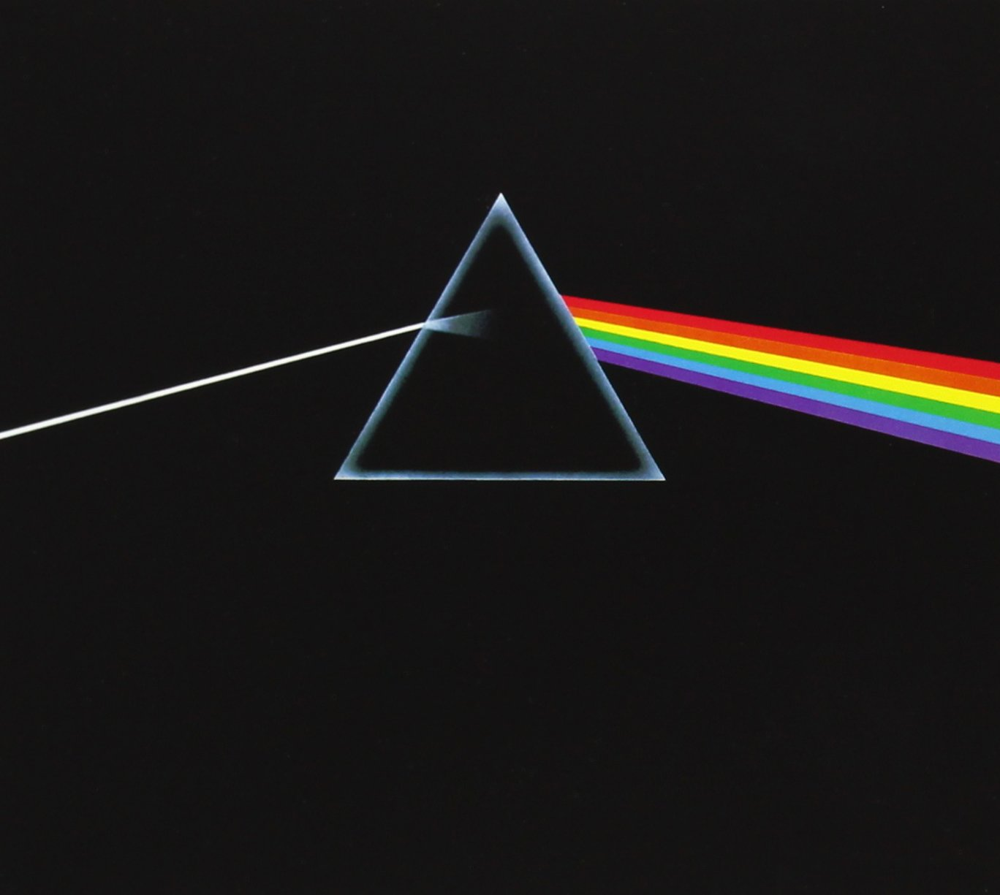

Members
Pink Floyd were founded in 1965 by Syd Barrett (guitar, lead vocals), Nick Mason (drums), Roger Waters (bass guitar, vocals), and Richard Wright (keyboards, vocals). Under Barrett's leadership, they released two charting singles and the successful debut album The Piper at the Gates of Dawn (1967).
The 70's
